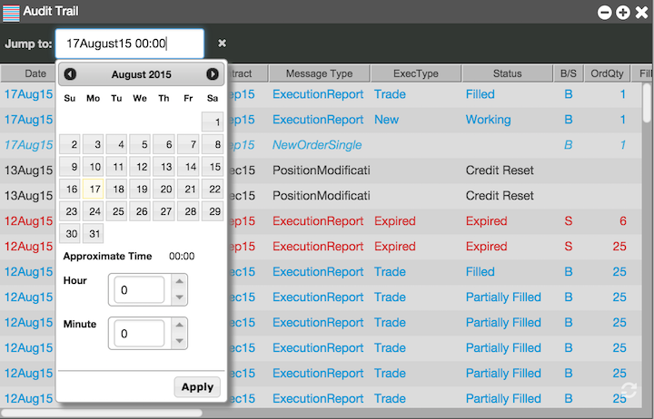
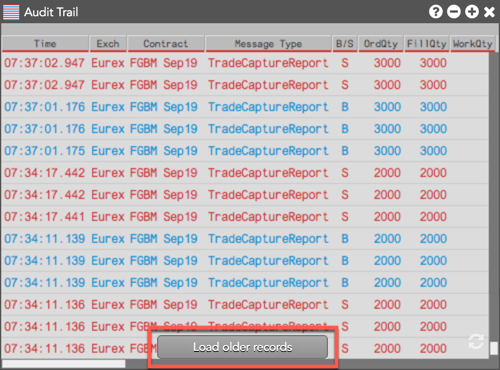

You can view messages from any date and time in the history of the account. Simply right-click in the widget and select Go to date from the context menu.

When you scroll to the bottom of the Audit Trail, the Load older records button may be displayed. You can click this button to retrieve the next batch of data in chronological order.
